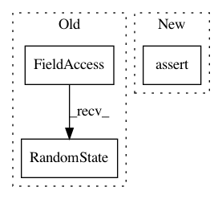

46d1dc838eaa6b14fd22d65302c888a1fa237ab6,test/test_intensify/test_successive_halving.py,TestSuccessiveHalving,test_init_3,#TestSuccessiveHalving#,87
Before Change
SuccessiveHalving(
tae_runner=None, stats=self.stats,
traj_logger=TrajLogger(output_dir=None, stats=self.stats),
rng=np.random.RandomState(12345), deterministic=True, run_obj_time=False,
cutoff=10, instances=[1, 2, 3], initial_budget=1, max_budget=5, n_seeds=1)
def test_top_k_1(self):
After Change
instances=[1], initial_budget=9, max_budget=10, eta=2)
self.assertEqual(len(intensifier.inst_seed_pairs), 1) // since instance-seed pairs
self.assertEqual(intensifier.initial_budget, 9)
self.assertEqual(intensifier.max_budget, 10)
self.assertListEqual(intensifier.n_configs_in_stage, [1.0])
self.assertListEqual(list(intensifier.all_budgets), [10.])
self.assertFalse(intensifier.instance_as_budget)
In pattern: SUPERPATTERN
Frequency: 4
Non-data size: 3
Instances
Project Name: automl/SMAC3
Commit Name: 46d1dc838eaa6b14fd22d65302c888a1fa237ab6
Time: 2020-02-28
Author: feurerm@informatik.uni-freiburg.de
File Name: test/test_intensify/test_successive_halving.py
Class Name: TestSuccessiveHalving
Method Name: test_init_3
Project Name: openai/gym
Commit Name: f9aaa3c9861316f528a9bae3ef3c8ba2445a0ca8
Time: 2019-03-24
Author: zuoxingdong@users.noreply.github.com
File Name: gym/spaces/discrete.py
Class Name: Discrete
Method Name: __init__
Project Name: hyperopt/hyperopt
Commit Name: ce64bd456f4658b2e407e15030d2015ea0190b29
Time: 2020-04-17
Author: liang.zhang@databricks.com
File Name: hyperopt/tests/test_spark.py
Class Name: FMinTestCase
Method Name: test_no_retry_for_long_tasks
Project Name: openai/gym
Commit Name: cee92691ad858952b4ed46c08cad6cc682868d22
Time: 2019-03-24
Author: zuoxingdong@users.noreply.github.com
File Name: gym/spaces/box.py
Class Name: Box
Method Name: __init__